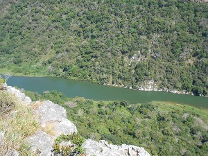
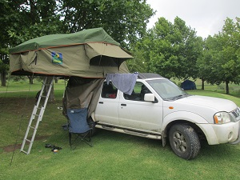

Welcome to "WHEN IN AFRICA!", an interactive site for Health professionals in Africa, make yourself at home going through our must see places and events to attend,
as well as advice on a variety of admin related items!
feel free to share your great places and experiences with us and soon on our forum!
The Editor W.I.A
MTHENTU RIVER LODGE
A must see destination when living in South Africa, is the beautiful Mthentu River Lodge This getaway is situated in the Eastern Cape, and is a well kept secret amongst locals. one is sure to really feel the true sense of space and freedom of being in Africa
ROOF TENT CAMPING
Camping is a great way to move around and see places in South Africa. It makes for a really great T.H.E (Total holiday experience!) Have a look on our blog regularly for 4x4 reviews and personal experiences!